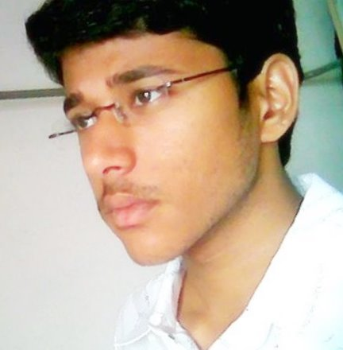

The Yearbook - Commemorating 2005-09!
Samish Chandra Kolli's profile information
Name - Samish Chandra KolliBirthday - 3-11-1987
Email - samishchandra@gmail.com
Address - Ft.no - 301 Surekha Paradise(apts), Chakirevupalem, Machilipatnam, 521001.
Phone - +91-9985428510
Webpage - Link
Hobbies - used mav more than pen in 4 yrs, haa well lots nd lots of GAMING, movies, BCing, chatting on phone :P (hehe most of U want to here this)
WishList - wanna have ______ with me (long list to fill in)
Memorabilia - keka's in labs, zzzzh's in classes, rofl's in corridors, wroom's on bikes, racha's in grounds, umm's in canteen, lolz's in mess and lots more...
What would you want to be remembered as - rockster
Future Plans - sorry, didn't get U, come again...
Testimonials written by Samish Chandra Kolli
Samish Chandra Kolli's Album

{kind=link}
Default caption
Testimonials
Bharat Ram Ambati wrote-Kolli... manchiki maru roopam
 . Sthreelanu gouravinchatam veedi deggara nunchi nechukovali. ame, tanu tappa vere vidhamga sambodhinchadu. akariki item galski papa kante ekkuva vadadu. boothulu matladadu. noru peddadi. entha manditho aina vatarinchagaladu. malla aa discussionlo okka boothu or vulger lang vundadhu. adhi veedi talent. kasi gadu kani oppukodu. studiestho patu gameslo kooda rachalu putisthadu. veeditho choosina item movies lifelo marchipolemu...
. Sthreelanu gouravinchatam veedi deggara nunchi nechukovali. ame, tanu tappa vere vidhamga sambodhinchadu. akariki item galski papa kante ekkuva vadadu. boothulu matladadu. noru peddadi. entha manditho aina vatarinchagaladu. malla aa discussionlo okka boothu or vulger lang vundadhu. adhi veedi talent. kasi gadu kani oppukodu. studiestho patu gameslo kooda rachalu putisthadu. veeditho choosina item movies lifelo marchipolemu...
Best incident:
Movie kosam auto ekki driver pakkana kurchuni route teiyadu ante veedu intha mabbu gadentira ani vadiki vinipinchela aravatam... appudu aa autovadi face choodali.

Vamshi Velagapuri wrote-
venni nenu paper lo chusa nandoi eamcet rankings appudu....
oora kasi...chala jokes ki inspirations..."assala" keka mama nuvvu....
all the best for your future..ra..
keep in touch,
iltu nee vam
Deepti wrote-
ahh.. I wanted to be the first to write a testimonial for you..Damn you!!
.. Anyways, here is a testimonial for my maha-kasi colleague..I really wish we are not in the same team, our manager would start comparing our work and I dont want any more of "see he is soo good at his work and you are .." sessions with my boss.
We share our woes, being in CVIT, then we were TA's for the most awesome course - Maths-III. He was all this dedicated TA initially, but I taught him not to be, because it is God Venki's course and you dont work for God Venki.
He always seems to be mad at something, whining for some reason
 , well you don't have to be so all the time you know! Never seen a person who can talk more than he does on phone. Dude, why dont you just accept the fact that you have a GF and stop telling the whole college absolutely unbelievable stories as to whom are you talking to on phone
, well you don't have to be so all the time you know! Never seen a person who can talk more than he does on phone. Dude, why dont you just accept the fact that you have a GF and stop telling the whole college absolutely unbelievable stories as to whom are you talking to on phone
Wishing you all the very best for your future
Satyanarayana Koneru wrote-
samish aka rockster !
babai ni choodagane anipinchedi enti intha handsome ga unnadu ani .. inkoncham jagratha choosthe highlight ayyedi veedi lady wear

first na pc pakkane veedu ... asalu appudu memu telugu lo matladina veedu english lo matladevadu .. appudu manchi rebel candidate .. evarini padithe vallani kottesevadu .. arisesevadu .. inka appude veedu theda gadu ani impression padipoyindi ... edo first year lo age adetappudu koncham koncham matlade vadini ...room ki vachi pedda peddaga arisina thitte vadini .. ala two yrs sarigga matladaledu .. babai sry ra ! but second year OS threads program evaluation appudu veedini na badulu vella mani adiga .. ventane ok annadu .. appati nundi baga close ayyam .. third year lo obh ki vacham .. fourth year lo inka cat ki four months undi anaga memu coaching ki velli bayamkaram ga vasanocham .. hehe adimatram marchiponu ra! ippudu veedante konni vishyallo full respect naku ...
manchi kasi gadu .. close to 9 cgpa maintain chestadu entha enjoy chesina anduku neeku
 ..
..
inka cs vishayaniki vasthe indian team ki sehwag elago ma clan ki rockster (veede) alaga .. bayamakaramaina sniper .. too much sharp .. opposition team mothanni lepesthuntadu okkade velli
 !
!
bayamkaramaina privacy maintain chestadu .. antha chadivi emi chadavanattu buildup isthadu edava ...
babai mari antha privacy maintain cheyyaku ra .. manchidi kadu ..
manchi helping nature undi babai ki .. badyatha telisina vadu .. gives grt importance to family n frnds ..
babai next yr nuvvu reco iste mee company lo join avutham hyd vachestam .. appdu malli keka puttidham ...
all the best ra samish !
ur satya
Nagarjuna Pavan Kumar G wrote-
veedu ekkada unnaa chuttuu oka 200 metres circumference lo evvarikainaa telisipotundi veedi voice vini...
vaadinchi kadigi paarestaadu janaalni....indeed aadeskuntaadanukunta....
maa bandar vaadani abhimaanam naaku....
manchi kasigaadu koodaa kadaa....
veedu cricket baagaaa aadataadu...ayinaa gaanii assalu aadataaniki raadu enduko...
anyway,all the best raa!!!
Atul Dwivedi wrote-
My compnay Partner ..hope ki ye to join kar raha hai ...banda fodu hai...as usual because he's in Capital IQ..as I'm
...
Padhai mein accha hai...banda seedha saadha .hai ..meri jyada baat isse nahi huii..but hope we'll talk thr ..
M.Bhanu Chandra wrote-
The Head-on Charger in Cs @ rockster
Ala vesethu pothadanthe.
Beauty freak , endalo thiragadu(> me).
enjoyed playing cs with u mama
All the best ra
Satish Chandra Prasad wrote-
babuuuuuuuuuu..........veeda pedda item gaadu , evadi maata vinadu SEETAYA type
, enta mandi cheppina maata vinadu veedide correct antadu  , ofcourse chala sarlu vasana vastadu anukondi
, ofcourse chala sarlu vasana vastadu anukondi  , ani vachina ventane veedini chesina vaadini chesestadu
, ani vachina ventane veedini chesina vaadini chesestadu  , veedi meeda gelavalante mana samskrutika basha vaadalsinde lekapote control avadu edava adi okkate margam andi , so janalara telisindi ga veedi meeda evadiki kasi vundo vaadu imka modalupettandi veedini d**gtam , veedidi tappaina gati gatiga arustu topic divert chestadu , aina edavalo cheppadaniki manchi points kuda vunnayi , anna cs lo king , studies lo abbo picha keka , mama loverboy kuda already 2-3 membrs ni line lo vunchadu , ekkuvaga ph lo tega sollu vestadu , k le mama chalu imka keep rocking all da best fr ur future !!!
, veedi meeda gelavalante mana samskrutika basha vaadalsinde lekapote control avadu edava adi okkate margam andi , so janalara telisindi ga veedi meeda evadiki kasi vundo vaadu imka modalupettandi veedini d**gtam , veedidi tappaina gati gatiga arustu topic divert chestadu , aina edavalo cheppadaniki manchi points kuda vunnayi , anna cs lo king , studies lo abbo picha keka , mama loverboy kuda already 2-3 membrs ni line lo vunchadu , ekkuvaga ph lo tega sollu vestadu , k le mama chalu imka keep rocking all da best fr ur future !!!Ganesh wrote-
Veeditho cinema chudatam oka lifelong experience. Adi item cinema aithe inka cheppanakarledu(smiley)
Detroit Tiger Harinath Policharla(Alex Fame) ki piccha fan
CS lo aithe anna kingu......................epudina,ekadina,enthamandinina alaa vesesthadu
Veedi fav. time pass aravatam.....idi kudaa " , " , "
Aa vishyam telika veeditho cs start chesaa.....em cheyyalo telikaa vee team lo join ayyi veedine champesaa
Room chala neatga vunchukuntaadu, manam eppudu ala vunchukuntamo
All the best for your future raa..CIQ ni rock cheyandi
Sandeep Y V wrote-
first year lo basket ball court lo toli parichayam.. abbo appatlo veedu naa size lone vundevadu... ball andaru adukuntunte teesesukuni pattukondi choodam annattu choosadu... okkasari ekkado kalindi... aa tarvata lab lo edo linux command gurinchi sava gottadu raa babu... afterwards i learnt about his eamcet rank
... baboi entadi asala... pelli card lo kuda vesukovachu adi ....
inkemundi second year nunchi CS start chesadu... baboi one of the best all round gamers IIIT has produced till now... He is a very very fast learner.. edaina grasp cheyyadam lo veedi tarvathe anta...
veedi kasi angle final year loki vachaka telisindi... NA course ki iddaram almost night out chesi exam lo anta marchipoyam asala
...
deniki asala compromise avvadu.. he always wants things to be perfect... maa group lo koncham manchi habits vunnayi veedikokkadike... daily snanam chesi bottu pettukuntadu
 ....
....
inka veedu nenu kalisi gadde gadini, siddu gadini (memu kalisthe evaru apaleru
)dobbina sessions, the sweeetest memories of my college life... naa life lo first accident kuda veede chesadu....
he is also a dedicated lover... inka maku evariki cheppaledu vadi lover evaro... donga saale gadu... bootulu matladadu.. kani doola panulu matram chala ekkuva chestadu..
inka veeditho shopping , restaurants anni bhale time pass ayipotai...
all the best raa... keep rocking rockster....
Karan wrote-
I came to know of Samish through my friend Sudha (who happens to be his cousin). I met him during the AIEEE counseling (I think) and remember him as a very shy guy. He hardly even spoke to Sudha, and I found that surprising, given that they were cousins of the same age
After that, we'd speak sometime to each other, courtesy my time spent in Adi's room. He is this intelligent chap, with a fodu eamcet rank and good acads. He was always a silent chap, but gave help when asked for it
. Over the years, I'll also remember him as this hard core gamer!
Wish you all the best in life!
Fav memory: BC in first floor.
Message for him: Why so shy?
Peace.
Siva Reddy wrote-
veedu oka keka. annitlo kekeee. speed, accuracy veedi weapons. veedi eamcet rank ee cheptundi aa vishayam.
first year lo veedini chusi veedni pedda item gaadu anukunevaadni
. evarini padithe vallani kottestu, tittestu, eppudu arustu kanapade sariki aa impression vacchindanukunta. kaani tarvatha veedu maaredo nenu maareno naaku telidu kaani, complete view change ayyindi veedi gurunchi.
ippudu naaku veedu chala close friend. emi adigina no cheppadu. too much talented. chaala fast learner. confidence levels kuda ekkuva. smart guy. mahesh baabu ante chastaadu. shopping and fashion freak. naaku konchem veedi taste ammayala taste la anipistundi
. arey neeku okati cheppali. ammaylalo nee dressing ante konthamandi ki picchi anta. latest ga telisindi. arey naakkuda nerpinchara . tarvatha nenu raccha chesta.
veeditho matladatam chaala kastam. memu andharam kalisi attack chesinaa veedu tirigi maa meda counters vestaadu. topic divert cheyadam lo manchi nerpari. veedini convince cheyadam chaala kastam. kaani convince cheyyocchu.
veedilo naaku baaga nacchevi veedi entha talented ayina em mathram pride vundadu. plus chaala help chestaadu. any kind of help. naakem techinical problem vacchina first contact ayyidi veedne. time pass ki best partner. cinema chuste veedithone chudaali. adi elanti cinema ayinaa sare neeku anni chupichestaadu.
kasi gaadu. ediena anukunte kacchintanga chestaadu. first year ki ippatiki veedi kocchina tranformation ee cheptundi deeni gurunchi (both physically and mentally). daaniki veediki
 . kotta vallatho kuda tvaraga kalisipothaadu. ammayalatho baa deal chestaadu. eppudu ammaylatho party vunna veedni tesukelipothaa. aa tarvatha aa party ki tesukellindaa nena veeda ani doubt vacchestundi .
. kotta vallatho kuda tvaraga kalisipothaadu. ammayalatho baa deal chestaadu. eppudu ammaylatho party vunna veedni tesukelipothaa. aa tarvatha aa party ki tesukellindaa nena veeda ani doubt vacchestundi .
phone signals ki effect nizamgaa vunte first patient veede avuthaadu. arey konchem jagratta.
all the best for your future ra. any help kaavalante nannu pilavadam marchipoku. nuvvu anukunnatte anni jargaalani korukuntunna.
bye

Kranthi Reddy. B wrote-
veedu chesse racha intha antha kadu...veedu matladam start peddithe inka evariki emi chance kuda ivvadu..donga sachinnodu...veedu niddara moham vessukoni andarinee "niddara moham " ani tiddutadu...item gadu...
roju oka 5-10 time bathroom ki oka mug pattukoni veltadu...deni guruncho kadu beaty concious... face meeda pimples ravavodu ani clearsil soap thegga rasatadu...
veedi talent mundu evadu paniki radu...i think he firmly believes in studying smarter than harder...really smart in doing things...veedi confidence level kekka...it was visible during the placements time whn there were already 8 candidates for 2 posts he still wanted to go to the interview and compete with the rest 8...and managed to get selected...gun shot
ento roju phone lo 1 hr payyina matladutadu...adi kuda ammayi tho ...adigithe matram just friend anntadu ante...not even gf...nijam cheppara item...
very good sense of humor and cs lo rockster nick tho jannallani adukuntadu...john gadu cheppindi correct pondy ki completely against kani still chesse pani matram aggadu...
all da best ra mama...hope ur every wish is fulfilled and marchipoku nee marriage ki andari nee pilluvu...
Bhanukiran Vinzamuri wrote-
Sam. First year lo workspace lo age aadtu kanpinche vaadu. Appudu edo flow lo andari to paatu Pedap**** samish ani anesa. Appudu start ayindaya veedi aravtam. He is the Rockster of our batch. Games adetapudu veedi aata king range lo vuntundi inka yavaru poti padaleru
=. Andari aata nee laga vundadu kada boss ayina arustune vuntadu andari meeda (2cnd year lab).
Kaani games acads ni too much balance chesi manchi cg plus super job kotedu. Great feat mama.
. Oke suggestion raa neeku from my side change your way of communication raa asalu veedito matladala ane face petamaku yavarni chusina satya janga wrote-
he is like Matt Damon in bourne movies..
He is so fast and accurate in his moves..
inka nijam cheppalante..
Veediki boothulu ante chaala istam kaani matladadu..
evaro ammayini love chesadu kaani cast problems (My guess.)
vaadi ki bore kodithe Dust bin ni point chesthu navvukuntu "Nuvvu ayyipovavu ninnu chesesthunnaru adhi neeku artham kaavatam ledhu" ani navvukuntu vuntadu..
pichi naa meku..
inkaa cheppalante memu kalisi shopping vellina vere ekkadiki vellina iddaram vasana vasthamu..
oka example cheppalante
okasari driving licence kosam Raghudeepu Gadde phone chesi rammannadu
appudu jarigina situations and king SCP's
counters i will never forget..
one more and similar one is
when we went to madhapur for hair cut.. Traffic police situation..
Saaandeepa Phani Srinivas Y wrote-
veedi extralu intermediate lone start aipoyayi..!!
eamcet lo state 6th..!!
asalu adi vinagane veedevadra babu ila unnaadu anukunna (naa pakka roll number ye lendi) appatlo oka jr. K.Satyanarayana la undevadu le
inka veedi item thanam gurinchi cheppalante naakokkadike saadhyam (ani anukuntunna
)
evarikaina kadha chepthe cinema teesthaaaru.... kani veediki manishini chupedithe chalu inka modhalu pedathaadu vadi meedi unnavi(5%), lenivi cheppi janalaki kopam teppisthu untaadu
edaina topic ki colour add cheyalante ventane samish gadi daggaaraki velli cheppaalsinde
veediki chaala pichhalu unnai..!! cinemalante pichhi, photolante pichhi, ammailante pichhi, phone lo batting ante pichhi, chaduvante pichhi, games ante pichhi inka ennnnnooooooooooo
ika veedini pogadaaalante....
oka multi-talented personality.... one of the best i've ever known..!!
manishini baaaagane ardham chesukogaladu....
anni games lo baaaga aaadathaadu, at the same time chadivi chadivi 8.5 paiga cg kuda....
veedini nammi veeditho paaatu aaataladithe mana chaduvulu, jeevithaalu sanka naaakipovatam khayam..!!
veeditho cinema chudatam manchi enjoyment..!! nenu, veedu kalisi chusina movies bayataki velli chesina edava panulu marchipolenivi
asalu place ayina tharuvatha memu chese extralaku haddulekunda pothondi
enthaina veedu one of my best frns here in IIIT-H
future lo nuvvu anukunnavanni jaragalani korukuntu.... nee ysp..!!
Samuel John wrote-
public demand vallaa cheyyaka tappatledhu raa , kindha testi lo last but one line ...here
*** veedu PORN chudadu kaani prince Mahesh ni chuusi kotteskuntaadu
***Samuel John wrote-
1st year lo veedoka vintha character , adhi balupo leka inkemaina types unnayo artham kaadhu, kaani lab lo(1st yr lo) veedini kothuri gaadu emanna doubts adigithey veedu "nidra moham gaa, mabbu gaa ilaa tiduthu chepthundevaadu..vaadu gorri laa dobbinchukune vaadu
veediki intha balupentraa ani den*alanipinchedhi,
1st yr lo antha parichayam ledhu,only english class lo veeditho interaction , appudu andharu ITEM=SAMISH or SAMISH = ITEM laa evadinainaa item analanteyy samish anevaallu
.................
kaani veedilo, veedi character lo 1st year nunchi 2nd year ending kalla motham change vachindhi... oka kekaaa laa tayyarayyaadu
, nidra moham gaa , mabbu gaa ivvanni veedi level boothulani feel avuthadani naaku tarvaatha telsindhi anteyy pilla P gaadu
veedi eamcet rank chuustheney veedi talent telusthundhi
, two lines information ki oka 1hr story alli leni ponivi create chesi adedho saametha untadhi like "okadaaniki ki masi pusi maredukaaya chesarani" but veedu mathram "maredu kayo inkedho fruit edhokati daaniki masi poosi ma*da chesthaadu , ilaa media vaallu news ni kasi kasi gaa cheyyataniki try chesinattu veedu kooda ratcha puttistaadu , ee field lo veedu pitchi keka neeku idhi chaalule
friends ki pranam icheyy type [ekkuva chesaana parledhu le] , pani lo compromise avvadu, a game ayina easy gaa nercheskuntaadu takkuva time lo, telugu cinema analysis baaga telsu
counters or discussions lo chaala saarlu veedini particular gaa target chesi chesthaaru veedini , veedu kooda vasaana , avvatam common , but oppukodu , nenu avvatam entraa meerandharu ayyaaru antaadu
veedu stuff chudadu kaani "Mahesh..........[will be added on request ]
inka chaalu malla bore kottinappudu neeku inkoti raasthaa ... vasthaaa
Samuel John wrote-
Raja sekhar reddy A wrote-
veedi talent andariki telisindhe . veedukooda maa cs clan lo oka member . cs practice matchlu adadu. ammaayi cs aduthondi ra ani chepthe ventane join ayyadu okasari . hehe . college ki vachinapudu satyanarayana la undevadu .. tarvata ysp la tayarayyadu .. ferrari chokkalu . telugu cinema criticism ...marchipoya na bandi konna 20 days ke padesi boni chesini veede .
Arun M.S.C wrote-
a nice friend..excitement chala ekkuva..arusthu vuntadu ekkuva..
raghudeep wrote-
buthulu matladadu, bommalu chudadu
kani ammaayila pichhi; malokam gadu
dabbulu waste cheyatam lo no.1
raghudeep wrote-
edava barre gonthu vesukuni janalani chesthunnattu build-up isthuntadu
pichha p gaadu
Praveen Bysani wrote-
abboo anipistadu .. WoW factor ekkuva veedi dagira.edi chesina perfect ga chesi chupistadu . manchi sense of humor . asalu akkada emi lekapoyina edo undi edo aipoindi ani cheppi andarini chesestadu.
"counter" strike lo nijamgane RockSter. ento mandiki aadarsham. another shopping freak. minimum ga nelako sari central ki vellakapote manasu voppukodhu veediki . manishini chusi manasthathvam chepthadu . first year to fourth year , transformation keka ra samish. fone lo oo tega matladestu untadu, adigite edava reasons istadu.
hyderabad lo racha lepu ra next year. gg.